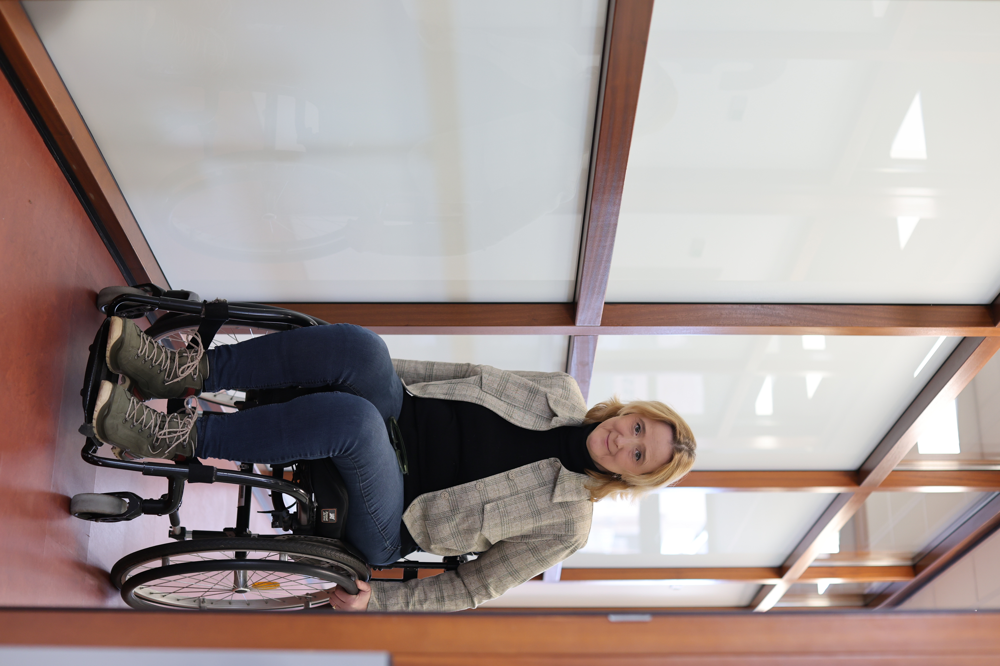

Psychologe in opleiding en fysiotherapeute met 25+ jaar ervaring in de gezondheidszorg. Ervaringsdeskundige met MS, holistische aanpak voor lichaam én geest.

Mijn reis in de gezondheidszorg begon meer dan 25 jaar geleden als fysiotherapeute. Gedurende al die jaren zag ik een herhalend patroon: fysieke klachten hebben bijna altijd een diepere oorzaak. Niet alleen lichamelijk, maar ook mentaal.
Toen mij zelf de diagnose MS werd gesteld, veranderde alles. Dit werd een wendpunt. Ik ervoer aan den lijve wat het betekent om dagelijks met een chronische ziekte te leven. Die persoonlijke ervaring, gecombineerd met mijn ruime professionele achtergrond, bracht mij naar de psychologie. Vanuit die ervaring bied ik nu ook gespecialiseerde MS coaching aan voor mensen door heel Nederland.
Ik begon als fysiotherapeute en heb meer dan twee decennia ervaring in het behandelen van fysieke klachten. Maar gaandeweg besefte ik: je kunt het lichaam niet los zien van de geest.
Mijn eigen diagnose Multiple Sclerose gaf mij authentiek inzicht in wat patiënten doormaken. Dit vormde de brug naar mijn huidige werk als psychologe in opleiding.
Momenteel volg ik de opleiding tot psycholoog en specialiseer ik me in coping en chronische ziekten. Deze kennis combineer ik dagelijks in mijn praktijk.
Iedere donderdag bemant ik als vrijwilliger de landelijke MS-telefoon van MS Vereniging Nederland (088 – 374 8555). Mensen met MS en hun naasten kunnen daar terecht met vragen, voor een luisterend oor of gewoon om hun verhaal te delen.
Vanuit mijn achtergrond als fysiotherapeute weet ik hoe lichaam en geest op elkaar inwerken. Die kennis zet ik nu in als psychologe in opleiding en coach. Ik help je om mentale patronen te doorbreken en weer grip te krijgen op je leven — met een aanpak die verder kijkt dan alleen je gedachten.
Stress voel je in je schouders. Vermoeidheid maakt je somber. Pijn beïnvloedt hoe je denkt. Lichaam en geest zijn niet los van elkaar te zien. Daarom kijk ik altijd naar het hele plaatje. Niet alleen naar wat je denkt, maar ook naar wat je voelt — in je hoofd én in je lijf. Dat maakt het verschil.
“Ik voelde me echt begrepen. Sabine begrijpt het probleem van beide kanten.”
— Een cliënt met chronische pijn
Luisterend, niet-veroordelend, persoonlijk. Sabine creëert een veilige ruimte waarin je jezelf volledig kunt zijn en waarin echte verandering kan plaatsvinden.
19047381504
Nederlands register van paramedische beroepen
04101232
Voor declaratie bij zorgverzekeraars
Of je nu met een specifieke uitdaging zit of gewoon meer over mij wilt weten: begin met een gratis kennismakingsgesprek. Geen verplichtingen, gewoon een eerlijk gesprek.
Plan een kennismakingsgesprek →Of bel direct: 06 425 590 22 · info@sabinevanderelsen.nl